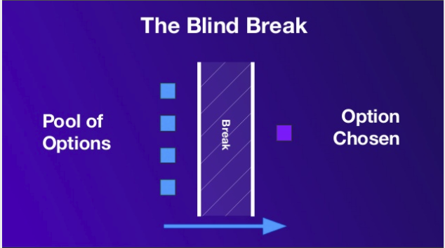

Source: Sortition in the History of Democracy, Slide 3
A lottery is a defensible way of making a decision when, and to the extent that, it is important that bad reasons be kept out of the decision.
Peter Stone
Left of centre parties have been serving up seriously, obviously bad candidates for years now. That happened at the last election in the US and will happen at the next one. It's happened at the last two elections in Australia and looks like happening at the next one. This nearly happened to the Liberal Government in Australia when they nearly acquired Peter Dutton as leader.
Why?
Though they are structured very differently, in each case, the battle to lead the party favours candidates who are good at gaining and wielding power within their party. And those who acquire the most power within parties are increasingly often, poorly equipped to acquire power for it.
Put in another way, the party is an oligarchy. And the Athenians knew a thing or two about oligarchy. Their democracy was the only one I know that understood itself as existing in the teeth of the ever-present menace of oligarchy. This was an important merit of sortition or selection by lot. Whenever sortition takes place it places a discontinuity – a 'blind break' – in the process by which a community gets from recognising a problem to coming up with a solution.
As Peter Stone puts it, the point about selection by lot is its arationality. It makes no sense to ask why someone was selected for a jury, for what reason they were selected. They were selected mechanically. And machines don't give reasons – they just do what they were programmed to do.
Usually, the blind break is just that – a discontinuity in decision making, not the imposition of a mechanical decision. We don't determine whether an accused is guilty or not guilty randomly. We determine the group that will determine that randomly. That way there's no reason-giving, no accountability for who is selected. And it seems that this is a better way of making some kinds of decisions.
So here's a 'hack' – something you can do yourself.
Whenever you're in a situation in which a standard hierarchical accountability model seems to have downsides, is it possible to somehow randomise the selection of a decision making or deliberative group. The point is, anyone who finds themselves on such a body owes their position to the luck of the draw, not to any promotion, appointment or favour. And this 'blind break' can help support those making the decision to make it for the right reasons, rather than to garner favour with the powerful or otherwise respond to incentives in an accountability regime. Thus, I'd argue that ethics committees would function much better if they were constituted in this way.
So here's one example of how one might solve the problem of parties not knowing their arse from their Albo when they choose their leader. I suggest that some kind of assembly be selected by some randomised process representing three groups equally.
- Those in senior positions in the party. One would include members of parliament but I'd be happy to include the executive of the party and senior staffers. These are the party insiders.
- All party members who are not senior officeholders.
- Members of the public.
I'd charge that group with choosing the leader if they could agree some super-majority such as two thirds. I think this would serve parties' interests in selecting their leader better than the mechanisms they have in place now. Some existing mechanisms are similar because they involve at least two 'streams' of voting – typically from the parliamentary party and the membership, but these are elections, not selections by lot. Certainly within the parliamentary party they perpetuate power battles between individuals and factions, and arguably within the membership sortition might put more sand in the wheels of entryism.
One key feature of democratic processes is that they usually have some sort of audit trail. The audit trail provides a means of supporting the claimed result through evidence, providing a basis for reviewing the result in cases of dispute. This helps provide confidence in the legitimacy of the democratic process.
How do you add such an attribute to a randomised process? What's to stop an insider rigging the process and just claiming the result was random?
They solve this with lotto by performing a randomisation ritual in public. I didn't have in mind anything quite so visual – though I'd have no problems if it were – but it would be something similarly auditable. Does that calm your concerns?